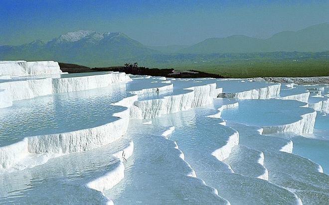
.
The spectacular white travertine terraces at Pamukkale have long been one of Turkey's most popular sights. The terraces form when water from the hot springs loses carbon dioxide as it flows down the slopes, leaving deposits of limestone.
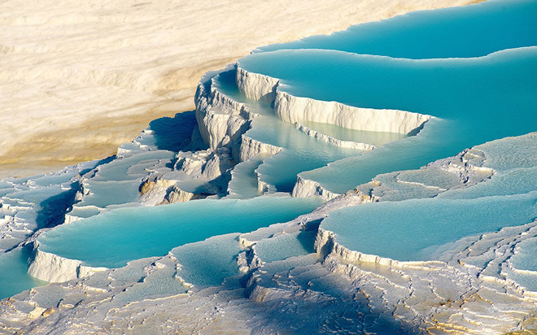
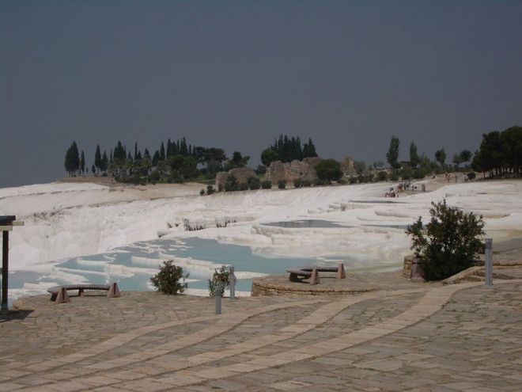
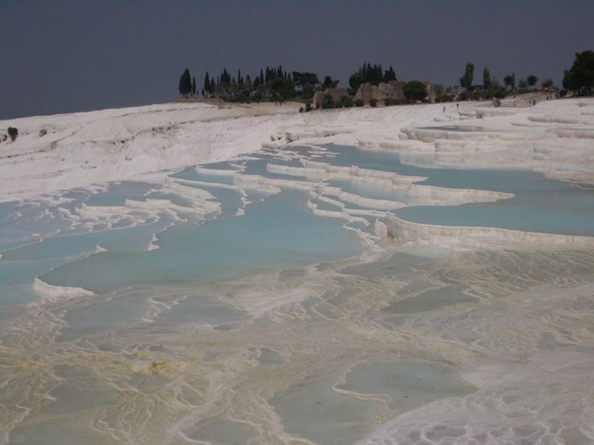
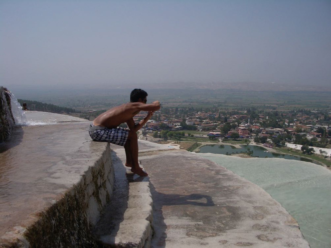
The layers of white calcium carbonate, built up in steps on the plateau, have earned the name of Pamukkale ('cotton castle').
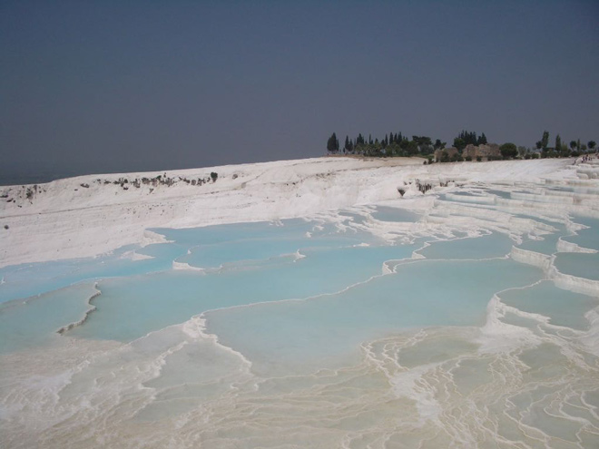
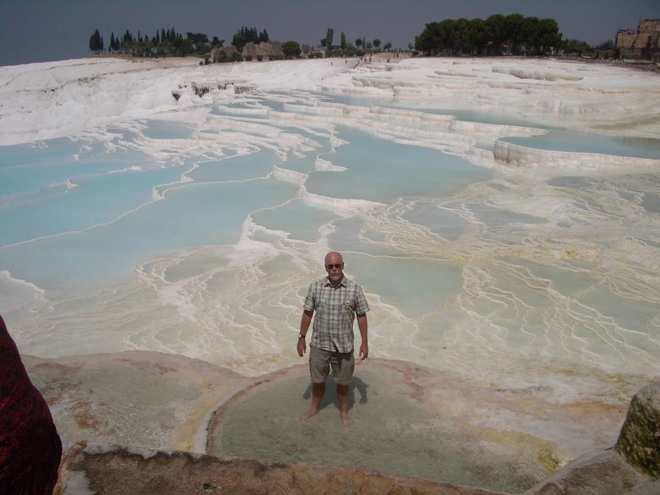
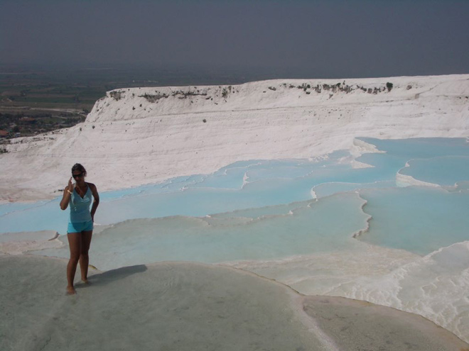
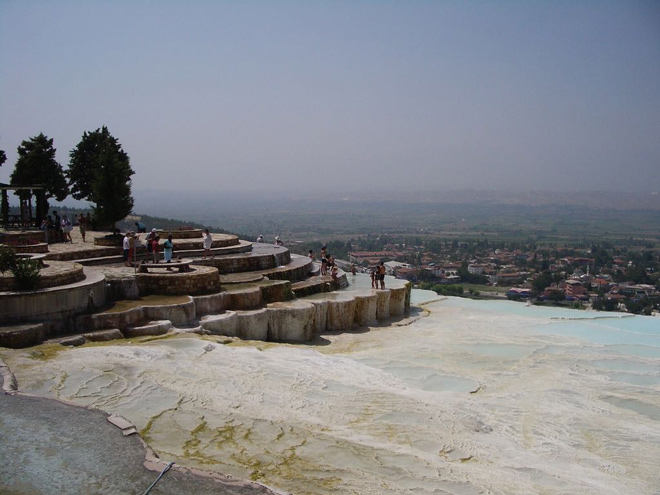
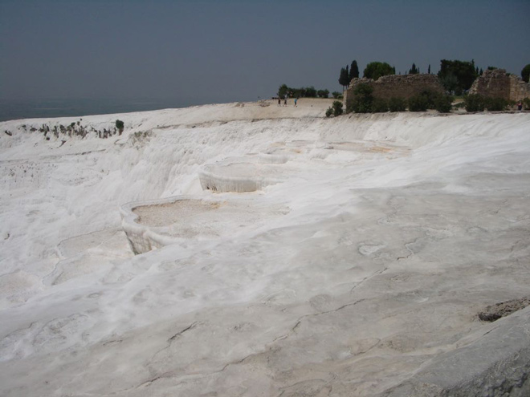
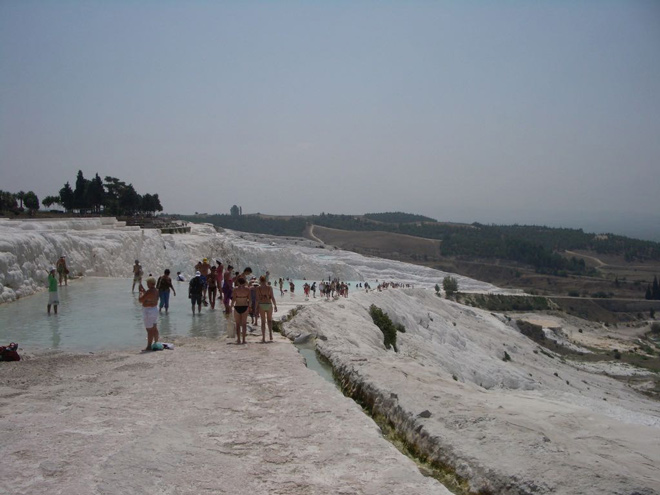
Any chance for a photo-opportunity ...!
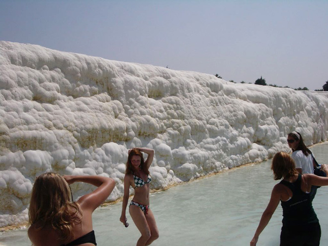
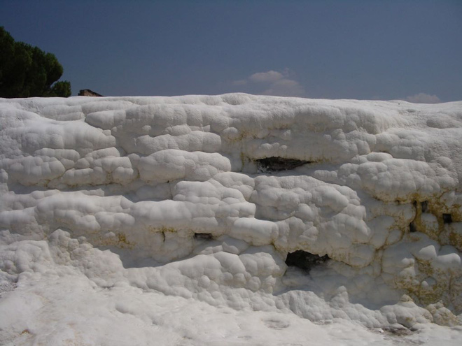
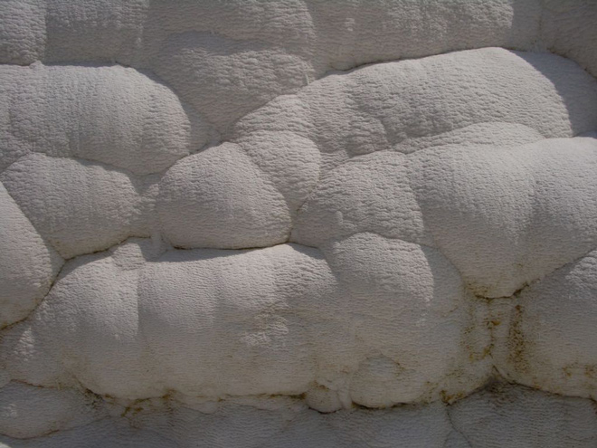
We then went to lunch at a hotel which had a thermal pool, a spa and a bubbling fountain. The water here was more brown and muddy-looking and the calcium deposits were terracotta in colour. I clambered into one of the pools and found the water remarkably warm and relaxing, although the plastic hair net was not a great fashion accessory ...
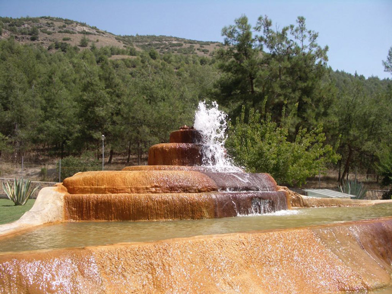
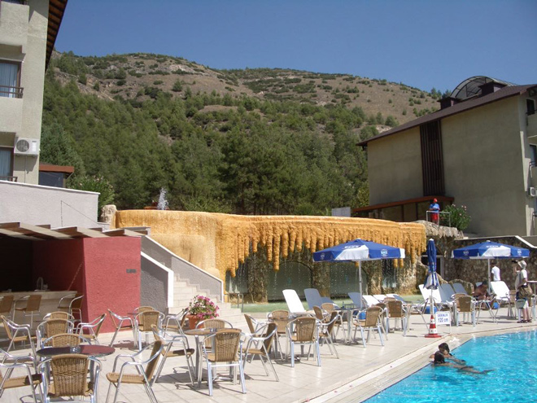
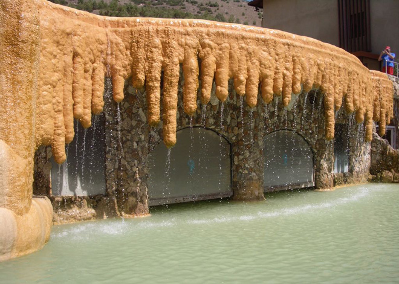
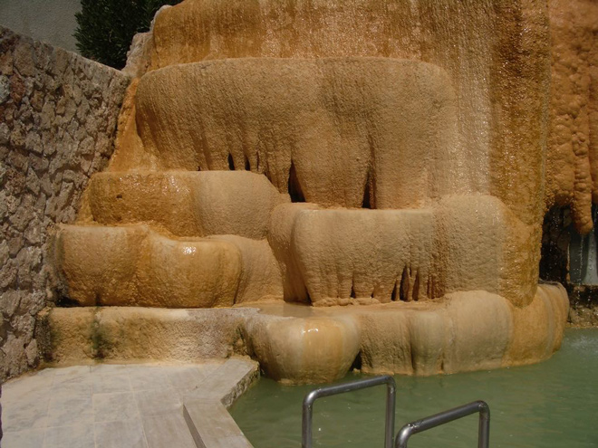
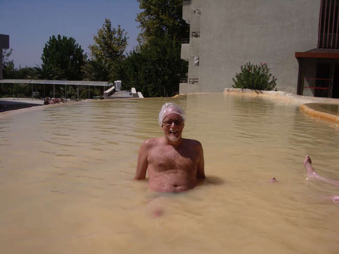
These photos from the hotel back up the hillside to Pamukkale show the vastness of the site. Just look at the tiny figures crossing the terrain in the photo below.
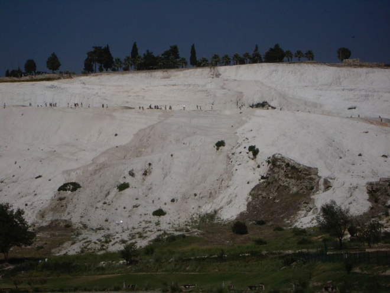
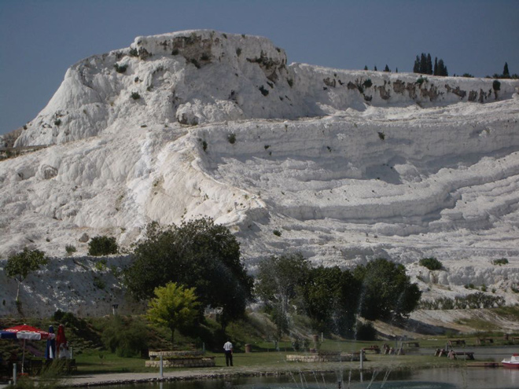
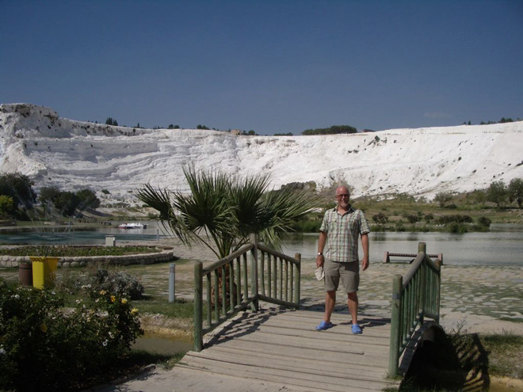